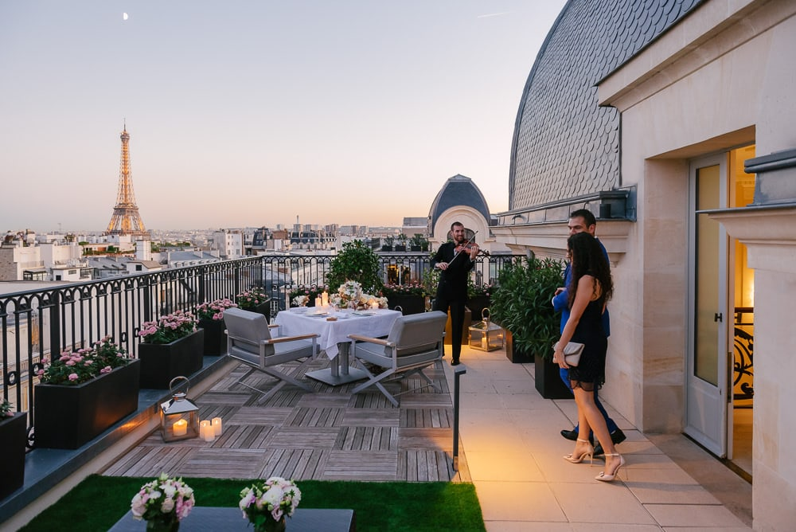
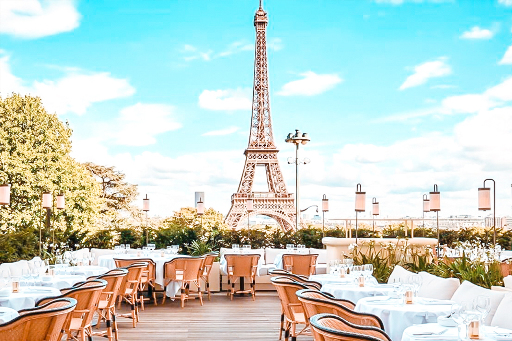

Paris
Paris is the capital and most populous city of France, with an estimated population of 2,165,423 residents in 2019 in an area of more than 105 km² (41 sq mi),making it the 30th most densely populated city in the world in 2020.
Since the 17th century, Paris has been one of the world's major centres of finance, diplomacy, commerce, fashion, gastronomy, and science. For its leading role in the arts and sciences, as well as its very early system of street lighting, in the 19th century it became known as "the City of Light".Like London, prior to the Second World War, it was also sometimes called the capital of the world.
The City of Paris is the centre of the Île-de-France region, or Paris Region, with an estimated population of 12,262,544 in 2019, or about 19% of the population of France,making the region France's primate city.
The Paris Region had a GDP of €739 billion ($743 billion) in 2019, which is the highest in Europe.According to the Economist Intelligence Unit Worldwide Cost of Living Survey, in 2022, Paris was the city with the ninth-highest cost of living in the world.
Since the late 18th century, Paris has been famous for its restaurants and haute cuisine, food meticulously prepared and artfully presented.
A luxury restaurant, La Taverne Anglaise, opened in 1786 in the arcades of the Palais-Royal by Antoine Beauvilliers; it featured an elegant dining room, an extensive menu, linen tablecloths, a large wine list and well-trained waiters; it became a model for future Paris restaurants.
The restaurant Le Grand Véfour in the Palais-Royal dates from the same period.The famous Paris restaurants of the 19th century, including the Café de Paris, the Rocher de Cancale, the Café Anglais, Maison Dorée and the Café Riche, were mostly located near the theatres on the Boulevard des Italiens; they were immortalised in the novels of Balzac and Émile Zola.
Several of the best-known restaurants in Paris today appeared during the Belle Époque, including Maxim's on Rue Royale, Ledoyen in the gardens of the Champs-Élysées, and the Tour d'Argent on the Quai de la Tournelle.

Since the late 18th century, Paris has been famous for its restaurants and haute cuisine, food meticulously prepared and artfully presented.
A luxury restaurant, La Taverne Anglaise, opened in 1786 in the arcades of the Palais-Royal by Antoine Beauvilliers; it featured an elegant dining room, an extensive menu, linen tablecloths, a large wine list and well-trained waiters; it became a model for future Paris restaurants.
The restaurant Le Grand Véfour in the Palais-Royal dates from the same period.The famous Paris restaurants of the 19th century, including the Café de Paris, the Rocher de Cancale, the Café Anglais, Maison Dorée and the Café Riche, were mostly located near the theatres on the Boulevard des Italiens; they were immortalised in the novels of Balzac and Émile Zola.
Several of the best-known restaurants in Paris today appeared during the Belle Époque, including Maxim's on Rue Royale, Ledoyen in the gardens of the Champs-Élysées, and the Tour d'Argent on the Quai de la Tournelle.
Today, due to Paris's cosmopolitan population, every French regional cuisine and almost every national cuisine in the world can be found there; the city has more than 9,000 restaurants.The Michelin Guide has been a standard guide to French restaurants since 1900, awarding its highest award, three stars, to the best restaurants in France. In 2018, of the 27 Michelin three-star restaurants in France, ten are located in Paris.
These include both restaurants which serve classical French cuisine, such as L'Ambroisie in the Place des Vosges, and those which serve non-traditional menus, such as L'Astrance, which combines French and Asian cuisines. Several of France's most famous chefs, including Pierre Gagnaire, Alain Ducasse, Yannick Alléno and Alain Passard, have three-star restaurants in Paris.

Greater Paris had 2,056 hotels, including 94 five-star hotels, with a total of 121,646 rooms.
Paris has long been famous for its grand hotels. The Hotel Meurice, opened for British travellers in 1817, was one of the first luxury hotels in Paris.The arrival of the railways and the Paris Exposition of 1855 brought the first flood of tourists and the first modern grand hotels; the Hôtel du Louvre (now an antiques marketplace) in 1855; the Grand Hotel (now the InterContinental Paris Le Grand Hotel) in 1862; and the Hôtel Continental in 1878.
The Hôtel Ritz on Place Vendôme opened in 1898, followed by the Hôtel Crillon in an 18th-century building on the Place de la Concorde in 1909; the Hotel Bristol on the Rue du Faubourg Saint-Honoré in 1925; and the Hotel George V in 1928.
In addition to hotels, in 2019 Greater Paris had 60,000 homes registered with Airbnb.[215] Under French law, renters of these units must pay the Paris tourism tax. The company paid the city government 7.3 million euros in 2016.
The football club Paris Saint-Germain and the rugby union club Stade Français are based in Paris. The 80,000-seat Stade de France, built for the 1998 FIFA World Cup, is located just north of Paris in the neighbouring commune of Saint-Denis.
Paris hosts the annual French Open Grand Slam tennis tournament on the red clay of Roland Garros. The city hosted the Olympic Games in 1900, 1924 and will host the 2024 Summer Olympics. The 1938 and 1998 FIFA World Cups, the 2007 Rugby World Cup, as well as the 1960, 1984 and 2016 UEFA European Championships were also held in the city. Every July, the Tour de France bicycle race finishes on the Avenue des Champs-Élysées in Paris.
Paris hosts several United Nations organisations including UNESCO, and other international organisations such as the OECD, the OECD Development Centre, the International Bureau of Weights and Measures, the International Energy Agency, the International Federation for Human Rights, along with European bodies such as the European Space Agency, the European Banking Authority or the European Securities and Markets Authority.
Paris is one of the few world capitals that has rarely seen destruction by catastrophe or war. For this, even its earliest history is still visible in its streetmap, and centuries of rulers adding their respective architectural marks on the capital has resulted in an accumulated wealth of history-rich monuments and buildings whose beauty played a large part in giving the city the reputation it has today.
At its origin, before the Middle Ages, the city was composed of several islands and sandbanks in a bend of the Seine; of those, two remain today: Île Saint-Louis and the Île de la Cité. A third one is the 1827 artificially created Île aux Cygnes.
Paris hosts the annual French Open Grand Slam tennis tournament on the red clay of Roland Garros. The city hosted the Olympic Games in 1900, 1924 and will host the 2024 Summer Olympics. The 1938 and 1998 FIFA World Cups, the 2007 Rugby World Cup, as well as the 1960, 1984 and 2016 UEFA European Championships were also held in the city. Every July, the Tour de France bicycle race finishes on the Avenue des Champs-Élysées in Paris.
Paris hosts several United Nations organisations including UNESCO, and other international organisations such as the OECD, the OECD Development Centre, the International Bureau of Weights and Measures, the International Energy Agency, the International Federation for Human Rights, along with European bodies such as the European Space Agency, the European Banking Authority or the European Securities and Markets Authority.
Paris is one of the few world capitals that has rarely seen destruction by catastrophe or war. For this, even its earliest history is still visible in its streetmap, and centuries of rulers adding their respective architectural marks on the capital has resulted in an accumulated wealth of history-rich monuments and buildings whose beauty played a large part in giving the city the reputation it has today.
At its origin, before the Middle Ages, the city was composed of several islands and sandbanks in a bend of the Seine; of those, two remain today: Île Saint-Louis and the Île de la Cité. A third one is the 1827 artificially created Île aux Cygnes.